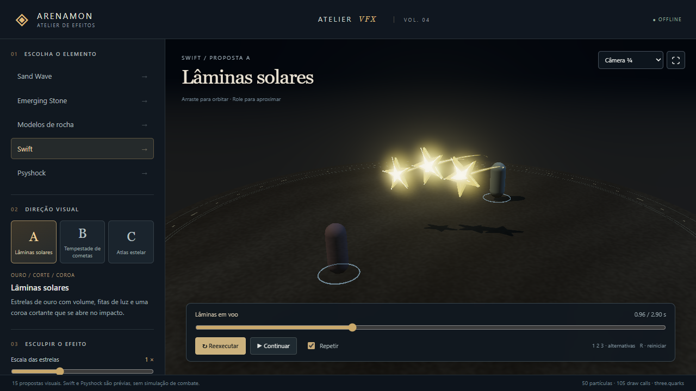
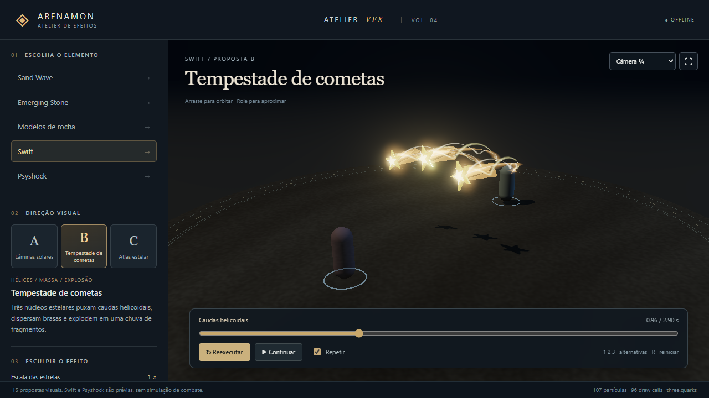
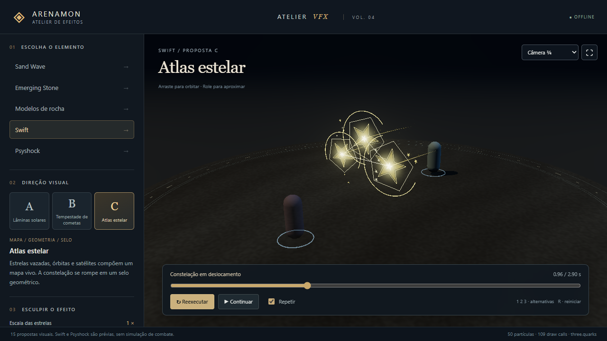
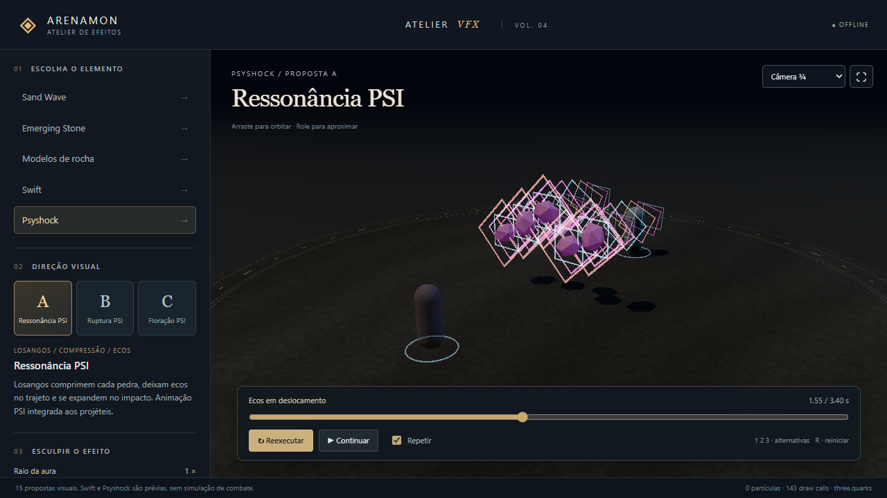
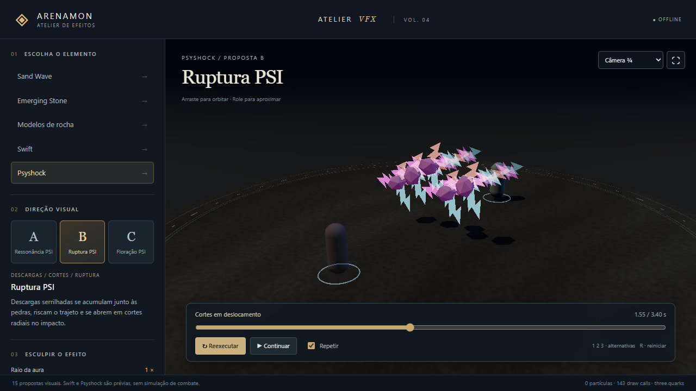
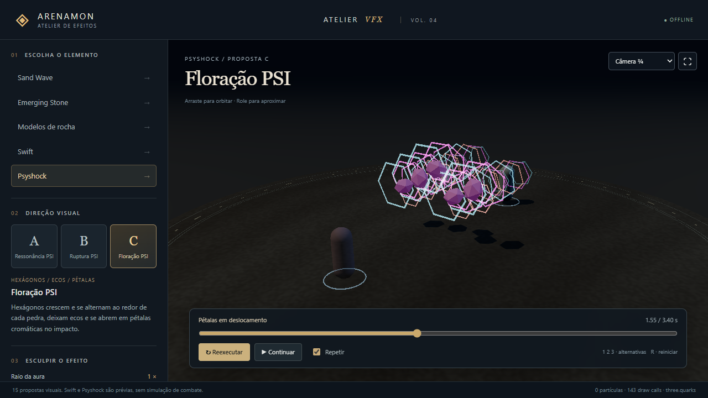

Atelier VFX · revisão 4← Portal Arenamon · Abrir atelier animadoSeis direções visuais · VOL. 04
Capturas reais a 720p, com o mesmo enquadramento. Selecione uma fase e clique na imagem para ampliar. Prévia artística, sem mudança nas regras de combate.
SWIFT · A
Lâminas solares

SWIFT · B
Tempestade de cometas

SWIFT · C
Atlas estelar

PSYSHOCK · A
Ressonância PSI

PSYSHOCK · B
Ruptura PSI

PSYSHOCK · C
Floração PSI
